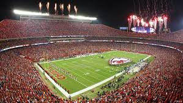

Los Kansas City Chiefs (en español: Jefes de [la] Ciudad de Kansas) son un equipo profesional estadounidense de fútbol americano de la ciudad de Kansas City, Misuri. Forman parte de la AFC Oeste de la National Football League (NFL). Juegan en el Arrowhead Stadium con sede en la ciudad de Kansas City, Misuri. Desde su creación, los Chiefs han ganado diez títulos de división (dos de la AFL y ocho de NFL), tres campeonatos de la AFL (1962, 1966 y 1969) y una Super Bowl (IV). Son el primer equipo original de la AFL que primero ha disputado una Super Bowl (Super Bowl I frente a los Green Bay Packers).
